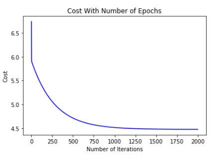

This post on Linear Regression is divided in several section. If you are here for some particular section, please select a link from below and go directly to that section.
Linear Regression is a statastical approach to finding the relationship between a target and its one or more predictor variables. Let's take the famous example of housing prices prediction. We are given sizes of houses in (sqft) and their corresponding prices. With this given information we try to predict prices of houses whose sizes are provided to us. This is called Simple Linear Regression.
But house prices may not only depend on the size of the houses. They are several other factors which may act as variables for the house prices we are trying to predict. It can be number of bedrooms in a house, if the house has a garage or not etcetera etcetera. When the number of predictor variables becomes more than one, our model is called Multiple Linear Regression.
Here below let's look at an example of housing prices data.
So, let's try to apply simple linear regression to above data. Initially, I'll choose a random line and apply it to our data and see how things go.
What I did above was to fit a random line to our data and because our data is not so complex we can clearly see that this is not a good fit. Infact, it's pretty bad. So do we have a mathematical real valued number which can show that exactly "how" bad is our fit?
The Green lines in the above picture give us a clear idea of how "bad" or "good" our fit is. Green lines are difference between the actual value and the value predicted by our model. So, in short, lesser the length of green lines in our data, better will be our model. This green length is called the "cost" of our regression model. Therefore, the cost function in our code will kinda compute the cost of our model at a particular time. We'll also make an algorithm which will reduce "cost" of our model called gradient descent.
The regression line plotted above is the best fit to our data. By looking at the green lines we can clearly see that the "cost" of our model has significantly reduced. This optimum fit was achieved by the gradient descent algorithm. Now below we'll see the mathematical formulae used to calculate the cost of the model at a particular instance.
y = c + mx
So h(x) is our hypothesis function and is used to calculate predictions based on current values of theta which are parameters of the model. Theta_0 is the interecpt of our regression line whereas Theta_1 is its slope.
This cost function used for linear regression is also called mean-squared error function. This function calculates error for each example i.e. is the square of the length of the green line. So cost is just the sum of the square-error for each example divided by two times the number of examples 'm'.
The above function is the gradient descent parameter function. This function is used to update the parameters 'theta' on each iteration of gradient descent. Here 'alpha' is our learning rate which is just a value that signifies how 'big steps' we want to take in order to find the global minima of our cost function.
When we try to code this, we try to minimize use of 'for loops' as much as possible if want a neat and fast implementation. Instead we take help of linear algebra and use vectors and matrices to do our calculations. We'll use Python's numpy package to assist us in this regard.
If you wish to follow along you can download the data by cliking here. This is the housing price prediction data and is labelled as 'x' and 'y'. Now follow along the steps below to load this data into a numpy array.
The shape of our numpy arrays is (m,1) and (m,1) for x and y respectievly. In our code 'm' is the 'number of examples' and 'n' is the number of features.
Here we'll see a scatter plot of our training data.

Now we need to add an array of ones to our feature vector so that our feature vector could have a (m,n+1) shape. We'll also set the values of alpha and number of iterations for gradient descent which we'll call 'epochs'. And finally, we'll initialize our theta vector which contains our parameters and its shape will be (n+1,1).
Now we'll make our costFunction() which will calculate for us the cost of our regression model at any instance we want. We'll also calculate the cost with initialized_theta vector and it must equal to 32.07, if you get this answer it means your code is working fine till now.
s

We'll intialize a 'costHistory' list which will come in handy later to plot the 'cost VS epochs' graph.
And we'll do the gradient descent optimization by creating a for loop that iterates for times equal to 'epochs'. In the gradient descent implementation, we have done same thing as shown in the above mathematical relation but it's been implemented using numpy arrays. I suggest you take out a paper and pencil and figure out the dimensions of the matrices invloved and make your code for this part.
Here using our trained parameters which are now stored in 'theta' variable we'll create a 'finalPrediction' matrice which will contain the predictions of all the examples according to our linear model. We'll plot this using matplotlib.pyplot and we'll be able to see our predicted regression line. And we'll print the cost of our model during the last iteration.
Now we'll plot a 'Cost VS Epochs' graph which will show how cost converges with number of iterations. This will help us to decide a better value for our learning rate 'alpha' and number of iterations 'epochs'.

This shows us that our cost function has converged around 1300 iterations and its not exactly making any difference after this with the choosen value of learning rate 'alpha'.
Here's the full code for Simple Linear Regression.
Now we'll implement Multiple Linear Regression. If you have payed attention to what we did above in Simple Linear Regression, it's going to be a piece of cake for you. Everything we are going to be do here is already been implemented above. So to follow along with the Multiple Linear Regression code, you should download the dataset which we're going to use. Click here to download the dataset.
Here we imported necessary libraries for implementation of our model and also imported data into DataFrame. You'll need to enter the path of the 'dataset.csv' file in your computer at the place of 'FILE PATH'. Now we'll use data.head() to print first few rows of our dataframe.
In this step we normalized our data. This is a super - important step. Sometimes our data values are of totally different orders, like number of bedrooms and price of house. This type of data can really make our algorithm suffer so what we do is to make our data of same order is to Normalize it. There are a few common normalizing methods which are generally used like,
( data - data.mean() ) / data.std()
In the rest of the code we took the values from dataframe and made numpy arrays of them representing features and labels, i.e. matrix X and matrix Y. 'm' is the number of examples and 'n' is the number of features.
In this step we appended a column of ones to our feature matrix. Then we chose the values of learning rate 'alpha' and number of iterations 'epochs'. We initialized our theta vector which is of shape (n+1,1). We defined our cost function for this model and calculated the cost of our model on the initial_theta values. Cost with initial theta should be equal to 0.489, if you are getting same result, you are good to go. Finally we initialized a costHistory list in which we'll store the cost of our model for each iteration.
In this section of code we defined the loop for gradient descent. This gradient descent function is exactly same as it was in Simple Linear Regression. We calculated our finalPredictions by using the values of the learned parameters theta. The final cost after gradient descent is found to be 0.130 .
Above code will plot a 'Cost Vs Epochs' Graph and it will give us an accurate idea of when our gradient descent function converges.